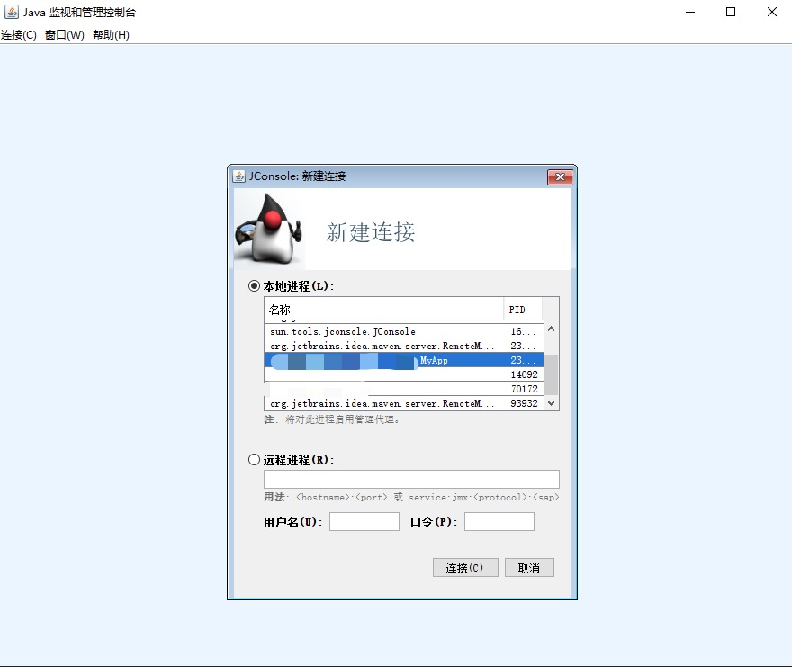
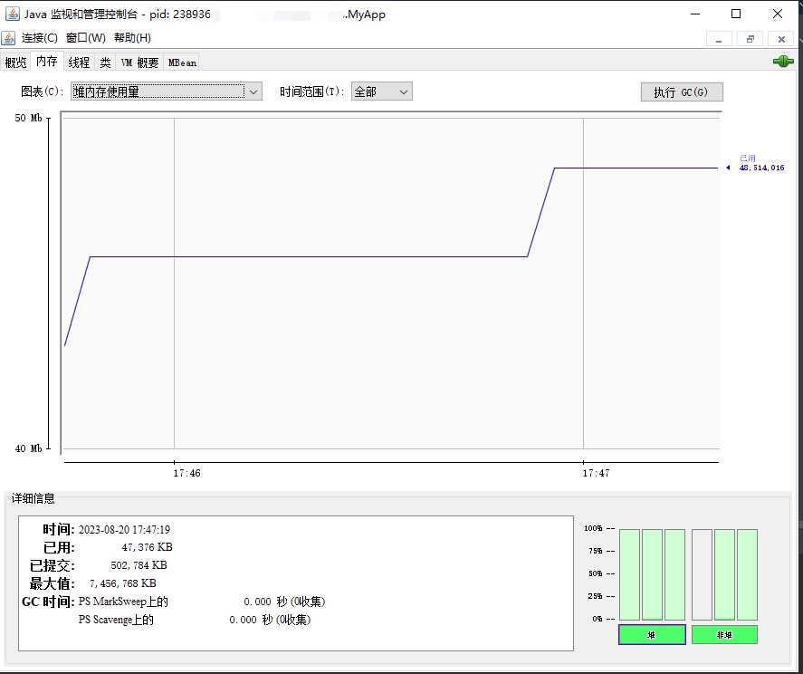
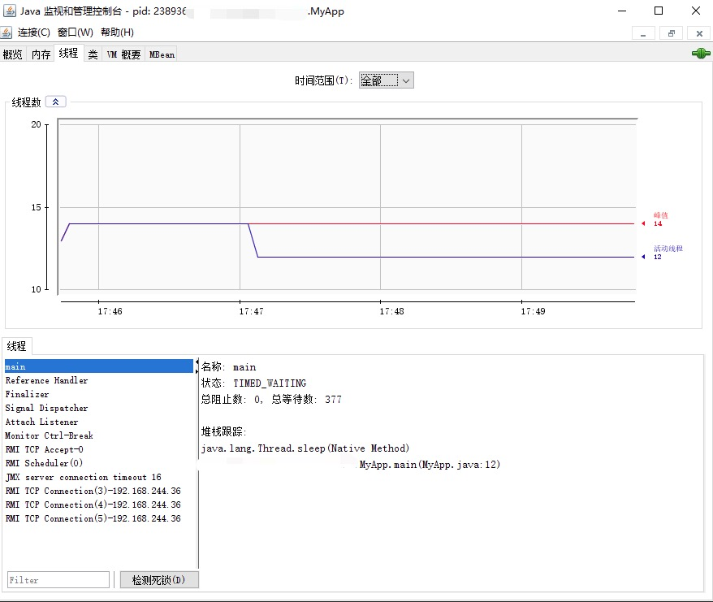
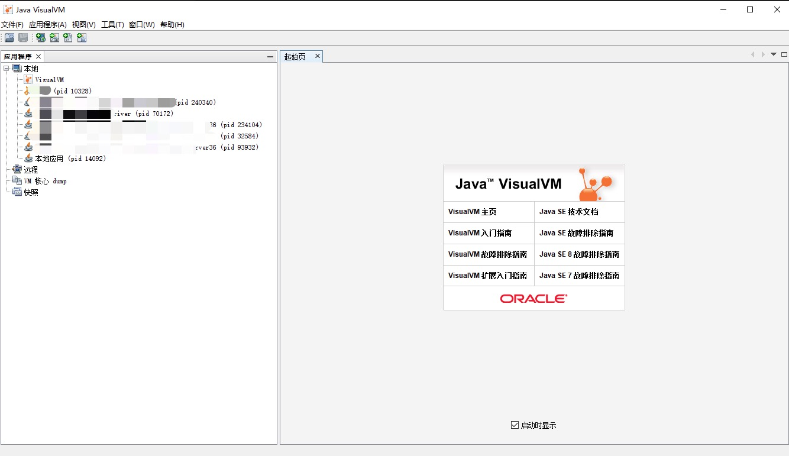
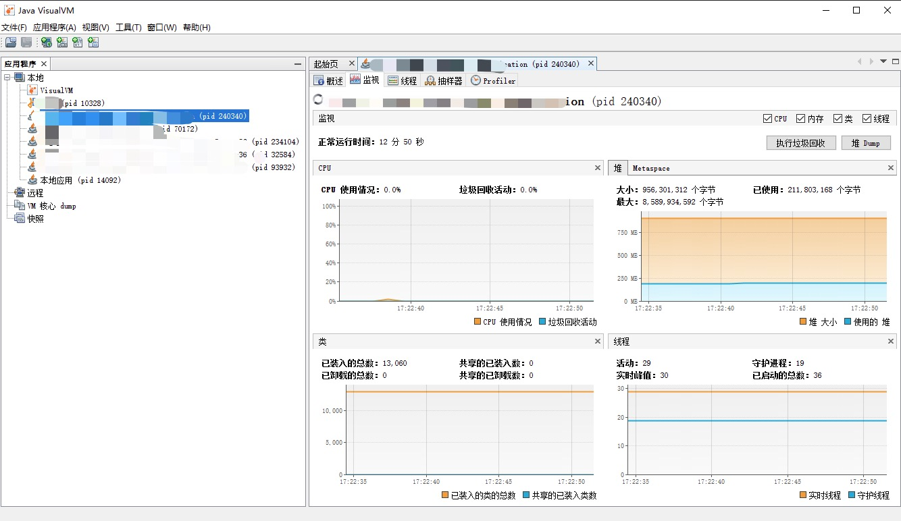
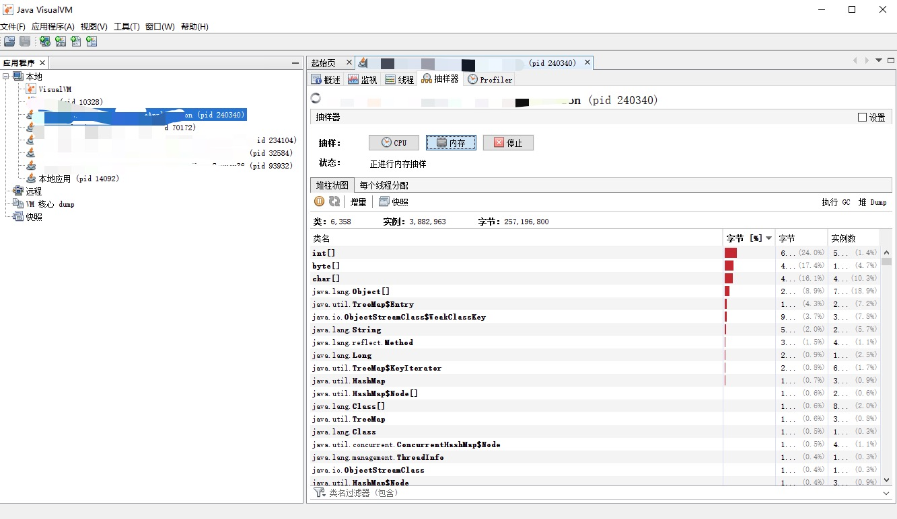
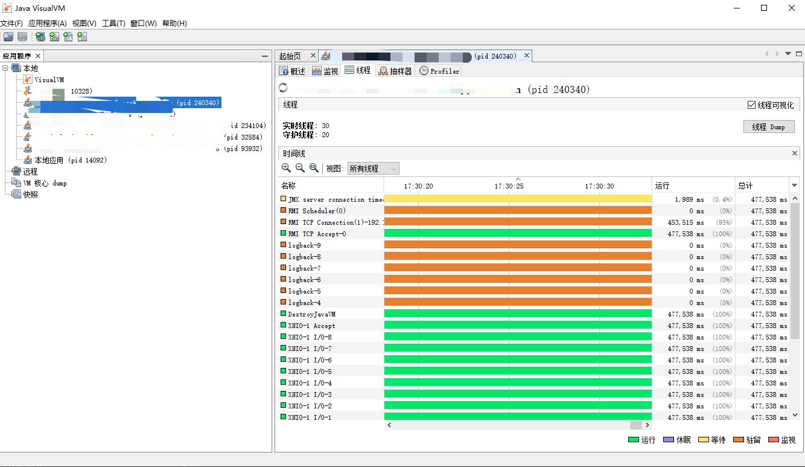

当涉及到 Java 性能分析时，有一系列强大的命令和工具可以帮助开发人员分析应用程序的性能瓶颈、内存使用情况和线程问题。以下是一些常用的 Java 性能分析命令和工具，以及它们的详细说明和示例。
以下是一些常用的性能分析命令和工具汇总：
| 命令 | 功能简述 |
|---|---|
jps |
用于查看正在运行的 Java 进程的状态信息。 |
jinfo |
用于查看和修改正在运行的 Java 进程的 Java 虚拟机（JVM）参数和系统属性。 |
jstack |
用于生成 Java 进程的线程转储信息。 |
jmap |
用于生成 Java 进程的内存映射信息。 |
jconsole |
是 Java 自带的监控和管理控制台，它提供了一个图形化界面，允许您监视和管理正在运行的 Java 应用程序的性能和资源使用情况。 |
jvisualvm |
是一款功能强大的多合一故障诊断和性能监控的图形化工具。 |
1、jps
jps （JVM Process Status Tool）命令用于查看正在运行的 Java 进程的状态信息，包括进程 ID 和主类名。这对于迅速了解系统上正在运行的 Java 应用程序很有帮助。
1.1 语法
jps [ options ] [ hostid ]
其中，options 是可选的命令行选项，hostid 是可选的 RMI 注册表主机 ID。下面是一些常用的选项：
-
-q：只输出进程ID，不包括类名和JAR文件名。 -
-m：输出传递给main方法的参数。 -
-l：输出主类全名，或者对于JAR文件，输出JAR文件路径。 -
-v：输出传递给JVM的参数。
1.2 示例
假设您有一个正在运行的Java应用程序，其主类为com.example.MyApp，并且它的进程ID为12345。下面是一些使用jps命令的示例：
-
查看所有 Java 进程的进程 ID 和主类名：
$ jps 12345 com.example.MyApp 67890 sun.tools.jps.Jps在上面的输出中，
12345是您的Java应用程序的进程 ID，com.example.MyApp是应用程序的主类名。 -
只输出 Java 进程的进程 ID：
$ jps -q 12345 67890 -
输出 Java 进程的进程 ID 和传递给
main方法的参数：$ jps -m 12345 com.example.MyApp arg1 arg2 67890 sun.tools.jps.Jps -m -
输出 Java 进程的进程 ID 和主类全名：
$ jps -l 12345 com.example.MyApp 67890 sun.tools.jps.Jps
通过使用不同的选项，您可以根据需要获取不同层次的信息。jps 命令对于快速查看正在运行的Java 进程非常有用，尤其在定位和监视Java应用程序时。
2、jinfo
jinfo 是一个 Java 命令行工具，用于查看和修改正在运行的 Java 进程的 Java 虚拟机（JVM）参数和系统属性。通过使用 jinfo，您可以动态地检查和更改 Java 应用程序的配置信息，而无需停止应用程序。
在很多情况下，Java 应用程序不会指定所有的 JVM 参数，开发人员可能不知道某一个具体 JVM 参数的默认值。在这种情况下，jinfo 就能很方便地查看 JVM 参数的当前值。
2.1 语法
jinfo [options] pid
其中，options 可以是以下选项之一：
-
-flags：打印指定 JVM 的参数值。 -
-sysprops：打印Java虚拟机的系统属性。 -
-flag name：打印指定名称的标志参数的值。 -
-flag [+|-]name：打印或设置指定名称的布尔标志参数的值。
pid 是正在运行的Java进程的进程ID。
2.2 示例
当使用jinfo命令来查看Java进程的信息时，可以得到类似下面的输出示例。以下是一些可能的输出示例，根据您运行的Java应用程序和虚拟机配置，实际输出可能会有所不同。
示例1：查看标志参数：
$ jinfo -flags 12345
Attaching to process ID 12345, please wait...
Debugger attached successfully.
Server compiler detected.
JVM version is 11.0.12+7
Non-default VM flags: -XX:CICompilerCount=3 -XX:InitialHeapSize=268435456 -XX:MaxHeapSize=4294967296 -XX:MaxNewSize=1431306240 -XX:MinHeapDeltaBytes=524288 -XX:NewSize=89128960 -XX:OldSize=179306496 -XX:+UseCompressedClassPointers -XX:+UseCompressedOops -XX:+UseFastUnorderedTimeStamps -XX:+UseParallelGC
Command line: -XX:InitialHeapSize=268435456 -XX:MaxHeapSize=4294967296 -XX:MaxNewSize=1431306240 -XX:MinHeapDeltaBytes=524288 -XX:NewSize=89128960 -XX:OldSize=179306496 -XX:+UseCompressedClassPointers -XX:+UseCompressedOops -XX:+UseFastUnorderedTimeStamps -XX:+UseParallelGC
VM Flags:
-XX:CICompilerCount=3
-XX:InitialHeapSize=268435456
-XX:MaxHeapSize=4294967296
-XX:MaxNewSize=1431306240
-XX:MinHeapDeltaBytes=524288
-XX:NewSize=89128960
-XX:OldSize=179306496
-XX:+UseCompressedClassPointers
-XX:+UseCompressedOops
-XX:+UseFastUnorderedTimeStamps
-XX:+UseParallelGC
示例 2：查看系统属性：
$ jinfo -sysprops 12345
Attaching to process ID 12345, please wait...
Debugger attached successfully.
Server compiler detected.
JVM version is 11.0.12+7
Non-default VM flags: -XX:CICompilerCount=3 -XX:InitialHeapSize=268435456 -XX:MaxHeapSize=4294967296 -XX:MaxNewSize=1431306240 -XX:MinHeapDeltaBytes=524288 -XX:NewSize=89128960 -XX:OldSize=179306496 -XX:+UseCompressedClassPointers -XX:+UseCompressedOops -XX:+UseFastUnorderedTimeStamps -XX:+UseParallelGC
Command line: -XX:InitialHeapSize=268435456 -XX:MaxHeapSize=4294967296 -XX:MaxNewSize=1431306240 -XX:MinHeapDeltaBytes=524288 -XX:NewSize=89128960 -XX:OldSize=179306496 -XX:+UseCompressedClassPointers -XX:+UseCompressedOops -XX:+UseFastUnorderedTimeStamps -XX:+UseParallelGC
Property settings:
awt.toolkit = sun.awt.windows.WToolkit
java.class.path = /path/to/your/application.jar
...
示例 3：查看特定标志参数的值：
$ jinfo -flag UseG1GC 12345
Attaching to process ID 12345, please wait...
Debugger attached successfully.
Server compiler detected.
JVM version is 11.0.12+7
Non-default VM flags: -XX:CICompilerCount=3 -XX:InitialHeapSize=268435456 -XX:MaxHeapSize=4294967296 -XX:MaxNewSize=1431306240 -XX:MinHeapDeltaBytes=524288 -XX:NewSize=89128960 -XX:OldSize=179306496 -XX:+UseCompressedClassPointers -XX:+UseCompressedOops -XX:+UseFastUnorderedTimeStamps -XX:+UseParallelGC
Command line: -XX:InitialHeapSize=268435456 -XX:MaxHeapSize=4294967296 -XX:MaxNewSize=1431306240 -XX:MinHeapDeltaBytes=524288 -XX:NewSize=89128960 -XX:OldSize=179306496 -XX:+UseCompressedClassPointers -XX:+UseCompressedOops -XX:+UseFastUnorderedTimeStamps -XX:+UseParallelGC
UseG1GC=true
示例 4：修改特定标志参数的值：
$ jinfo -flag +PrintGCDetails 12345
Attaching to process ID 12345, please wait...
Debugger attached successfully.
Server compiler detected.
JVM version is 11.0.12+7
Non-default VM flags: -XX:CICompilerCount=3 -XX:InitialHeapSize=268435456
3、jstack
jstack（Java Stack Trace）命令用于生成 Java 进程的线程转储信息。它可以显示每个线程的堆栈跟踪，帮助您找出可能的死锁、死循环和线程问题。
3.1 语法
jstack [ options ] pid
其中，options 是命令选项，pid 是目标 Java 进程的进程 ID。
以下是一些常用的命令选项：
-
-F：强制生成线程堆栈，即使Java进程没有响应。 -
-m：除了线程堆栈，还包括每个线程的本地（本地方法）信息。 -
-l：除了线程堆栈，还包括锁信息。 -
-h：显示帮助信息。
3.2 示例
使用 jstack 命令分析线程问题。
假设您有一个 Java 应用程序，出现了死锁的情况。您可以使用 jstack 命令来分析线程问题。以下是一个示例：
-
首先，找到目标 Java 进程的进程 ID（pid），可以使用
jps命令来查看正在运行的Java进程：jps -
假设您找到了要分析的 Java 进程的进程 ID 为
12345，使用jstack命令来生成线程堆栈信息：jstack 12345 -
命令会输出每个线程的调用栈信息，您可以在输出中查找线程状态、锁信息等。
假设您的 Java 应用程序中有两个线程，一个正在等待锁，而另一个持有该锁。这可能导致死锁。通过运行 jstack 命令，您可以获得类似以下的输出：
"Thread-1" #10 prio=5 os_prio=0 tid=0x00007f36e8001000 nid=0x5303 waiting for monitor entry [0x00007f36e3100000]
java.lang.Thread.State: BLOCKED (on object monitor)
at com.example.MyClass.method1(MyClass.java:50)
- waiting to lock <0x00000000e3033c88> (a java.lang.Object)
at com.example.MyClass.run(MyClass.java:100)
"Thread-2" #11 prio=5 os_prio=0 tid=0x00007f36e8001800 nid=0x5304 waiting on condition [0x00007f36e300f000]
java.lang.Thread.State: TIMED_WAITING (sleeping)
at java.lang.Thread.sleep(Native Method)
at com.example.MyClass.method2(MyClass.java:75)
at com.example.MyClass.run(MyClass.java:120)
在这个示例中，Thread-1 正在等待获取一个锁，而 Thread-2 在持有锁的线程中等待。这可能是一个死锁的迹象，您可以根据这些信息来分析并解决线程问题。
总之，jstack 命令是一个有用的工具，用于生成Java进程的线程堆栈跟踪信息，帮助您分析和解决应用程序中的线程问题。
4、jmap
jmap（Java Memory Map）命令用于生成 Java 进程的内存映射信息。它提供了堆的详细信息，包括 Java 堆内存、对象统计和内存使用情况的详细信息，可以帮助开发人员分析内存泄漏、内存使用情况等问题。
4.1 语法
jmap [options] <pid>
其中，options 是一些可选的命令选项，<pid> 是 Java 进程的进程 ID。
常用的 jmap 命令选项包括：
-
-heap: 显示Java堆内存使用情况。 -
-histo: 显示Java堆内存中的对象统计信息。 -
-dump:<format>=<file>: 将堆内存转储到文件，其中<format>为转储格式（如b,c,hprof），<file>为目标文件名。 -
-finalizerinfo: 显示等待终结者队列中的对象。 -
-F: 在无法连接到进程时，强制执行转储操作。
4.2 示例
示例1：使用jmap命令分析 Java 堆内存
假设您有一个 Java 应用程序正在运行，您想要分析其 Java 堆内存使用情况，以便查找内存泄漏问题。您可以使用以下命令：
jmap -heap <pid>
其中，<pid> 是 Java 应用程序的进程 ID。运行上述命令后，jmap 会输出 Java 堆内存的使用情况，包括堆的大小、已使用内存、空闲内存等。
示例2：使用jmap命令生成堆内存转储文件
假设您怀疑 Java 应用程序存在内存泄漏，您可以使用 jmap 命令生成堆内存转储文件，以便后续分析。以下是一个示例：
jmap -dump:format=b,file=heapdump.bin <pid>
在这个示例中，format=b 表示将转储以二进制格式保存，file=heapdump.bin 指定转储文件名。您可以将 <pid> 替换为实际的 Java 进程 ID。运行此命令后，jmap 会生成一个名为 heapdump.bin 的转储文件，您可以使用其他工具进行分析。
注意事项：
-
使用
jmap命令时，建议在测试或开发环境中进行，避免在生产环境中使用，因为生成堆内存转储文件可能会影响应用程序的性能。 -
jmap命令可能需要JVM的调试权限，因此确保您有足够的权限来运行该命令。 -
转储文件可能会相当大，特别是在内存使用量较大的情况下。确保您有足够的磁盘空间来存储转储文件。
总之，jmap 命令是一个有用的工具，可以帮助开发人员分析 Java 应用程序的内存使用情况，查找内存泄漏问题，并生成堆内存转储文件以进行后续分析。
5、jconsole
jconsole（Java Monitoring and Management Console）是 Java 自带的监控和管理控制台，它提供了一个图形化界面，允许您监视和管理正在运行的 Java 应用程序的性能和资源使用情况。jconsole 是一个非常有用的工具，可以帮助开发人员识别问题、进行性能调优和监控Java应用程序。
5.1 主要功能
-
实时监控： 可以实时监控 Java 应用程序的内存使用情况、线程状态、垃圾回收、类加载等。
-
堆内存分析： 提供了对堆内存的监控和分析，可以查看对象数量、内存占用等信息。
-
线程分析： 可以帮助您检查线程的状态、堆栈跟踪和 CPU 使用情况，帮助您发现死锁和性能问题。
-
垃圾回收分析： 提供了垃圾回收的详细信息，可以查看垃圾回收的频率和效果。
-
MBean管理： 可以连接到 MBean（管理bean），允许您管理和监控应用程序的 MBean。
5.2 示例
以下是使用 jconsole 的示例，以监控一个正在运行的 Java 应用程序：
-
启动您的 Java 应用程序。假设您的应用程序是一个简单的 Java 程序，例如：
public class MyApp { public static void main(String[] args) { while (true) { System.out.println("Running..."); try { Thread.sleep(1000); } catch (InterruptedException e) { e.printStackTrace(); } } } } -
打开终端并运行以下命令，启动
jconsole：jconsole -
在
jconsole界面中，您可以看到一个列表，显示了正在运行的 Java 进程。选择您的应用程序进程并点击“连接”。
-
在
jconsole的不同选项卡中，您可以查看内存使用情况、线程状态、垃圾回收信息等。例如，您可以在“内存”选项卡中查看堆内存使用情况。
-
在“线程”选项卡中，您可以查看每个线程的状态、堆栈跟踪等信息，以帮助您识别潜在的线程问题。

jconsole 是一个强大的 Java 性能监控和管理工具，提供了丰富的功能来监视和分析应用程序的性能和资源使用情况。通过 jconsole，开发人员可以轻松地识别问题、分析性能瓶颈，以及进行调优，从而提升Java应用程序的性能和效率。
6、VisualVM
Java VisualVM（Java Visual Monitoring and Troubleshooting Tool）是一款功能强大的多合一故障诊断和性能监控的图形化工具，它集成了多种性能统计工具的功能，使用它可以代替 jmap、jstack 甚至 jconsole。
它是 Java 开发工具包（JDK）的一部分，可以帮助您实时监控应用程序的各种指标，如内存使用、线程情况、垃圾回收等，以便发现和解决性能问题。
6.1 主要功能
-
实时监控： 允许您实时监控Java应用程序的运行状态。您可以查看内存使用情况、线程状态、CPU利用率等指标。
-
内存分析： 提供了内存分析工具，可以帮助您识别内存泄漏和对象分配情况。您可以查看堆内存的内容，分析对象引用关系。
-
线程分析： 可以监控和分析应用程序中的线程状态，帮助您发现死锁、线程争用等问题。
-
垃圾回收分析： 工具可以显示垃圾回收的详细信息，帮助您确定垃圾回收的类型、频率和影响。
-
CPU分析： 可以帮助您分析 CPU 利用率高的原因，找出耗费 CPU 资源的部分。
-
多种插件： 支持各种插件，扩展了其功能。您可以安装插件来支持不同的 Java 应用程序和特定的性能分析需求。
6.2 示例
监控内存和 CPU 使用。
-
启动 Java VisualVM： 您可以在JDK的
bin目录中找到jvisualvm.exe（Windows）或jvisualvm（Linux/macOS）并运行它。
-
连接到应用程序： 在 Java VisualVM 中，点击的“远程”按钮，然后在“远程”面板中添加要连接的远程或本地Java进程。
-
监控性能： 连接到应用程序后，您可以查看实时性能监控信息，包括内存、线程、CPU使用等。您还可以选择不同的监视选项，如“监视”、“内存”、“线程”等标签。

-
进行内存分析： 在“抽样器”标签中，您可以生成并分析堆转储，查看对象引用关系、占用内存的对象等。

-
线程分析和垃圾回收分析： 在“线程”和“监视”标签中，您可以监控线程状态、识别死锁，以及查看垃圾回收行为。

总之，Java VisualVM 是一个强大的性能分析工具，可以帮助您监控、分析和优化Java应用程序的性能。通过实时监控、内存分析、线程分析等功能，您可以更深入地了解应用程序的运行情况，并解决性能问题。
7、总结
Java 性能分析是确保应用程序优化和效率的关键步骤。这些命令和工具提供了详细的信息，可以帮助您分析和解决性能问题。无论您需要查找内存泄漏、分析线程问题，还是优化垃圾回收，这些工具都能够提供有价值的信息。掌握这些命令和工具，将有助于您更好地管理和优化您的Java应用程序，提供更好的用户体验。
参考：
- 《Java程序性能优化：让你的Java程序更快、更稳定》